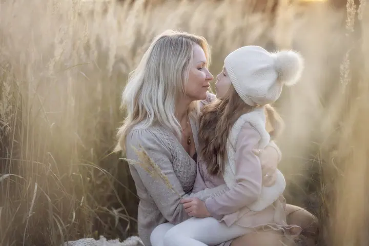

Svatební focení
Na svatbě se neschovávám v pozadí, jsem vždy tam, kde se něco děje. Podle balíčku fotím od obřadu až po svatební zábavu do pozdních hodin.

Jmenuji se Milan Samochin a věnuji se hlavně svatbám, ale rád fotím i rodiny a páry v přírodě. Pracuji převážně v Olomouckém kraji a nejradši fotím venku, kde mi s fotka…
Rezervovat termínVěnuji se převážně svatební fotografii. Miluji tu jedinečnou atmosféru, emoce a chvíle, ze kterých se skládá příběh novomanželů. Na svatbě nejsem fotograf, který se schovává někde v pozadí. Jsem vždy tam, kde se něco děje, a mým cílem jsou nejen krásné fotky, ale také opravdové vzpomínky.


Rád experimentuji, hledám nové úhly pohledu a pracuji s přirozeným světlem, které dodává fotkám autenticitu. Nejradši fotím v exteriéru, protože příroda dává snímkům další rozměr. Za více než sedm let jsem nafotil přes 120 svateb a každá byla pro mě jiná.
Když zrovna nefotím svatby, věnuji se krajině, přírodě a architektuře, občas i z dronu. Je to pro mě relaxace a zdroj inspirace. Fotím hlavně na Olomoucku, Prostějovsku, Vyškovsku a v Brně, ale rád cestuji. A když nedržím fotoaparát, užívám si dobré pivo a společnost pozitivních lidí.
Co fotím
Na svatbě se neschovávám v pozadí, jsem vždy tam, kde se něco děje. Podle balíčku fotím od obřadu až po svatební zábavu do pozdních hodin.
Klidné focení venku v přírodě, nejradši při západu slunce. Ke každému balíčku dostanete černobílé fotografie zdarma.
Přirozené focení v přírodě ve večerním světle, kde vzniknou fotky plné emocí, smíchu a opravdových okamžiků.
Fotky z období očekávání v přirozeném světle a v exteriéru. Cena se řídí počtem upravených fotografií.
Fotografie jsou ilustrační
Postup
Napište mi nebo zavolejte a probereme, co si od focení představujete. U svatby společně vybereme balíček podle toho, kolik hodin dne chcete mít nafoceno.
Svatební termín držím po zaplacení rezervačního poplatku 4 000 Kč, který je potřeba uhradit do týdne od domluvy.
Fotím v přirozeném světle a nejradši venku. Na svatbě jsem tam, kde se něco děje, a u rodin a párů nechávám prostor pro uvolněné, přirozené chvíle.
Všechny fotky pečlivě upravím a pošlu je elektronicky nebo předám na USB disku. K dispozici máte i webovou galerii, u vyšších balíčků navíc vytištěné fotografie.
Otázky
Záleží na balíčku. Od 150 až 200 upravených fotografií u nejmenšího balíčku po 550 až 600 fotek u balíčku Premium, kde fotím celý den včetně příprav ženicha a zábavy do pozdních hodin.
5 upravených fotografií stojí 1 200 Kč, 10 fotografií 1 900 Kč a 15 fotografií 2 500 Kč. Každá další fotka je za 150 Kč a černobílé verze dostanete ke každému balíčku zdarma.
Neupravené fotografie neposkytuji. Pokud o ně ale opravdu stojíte, nabízím RAW soubory na externím disku jako příplatkovou službu za 6 000 Kč.
Převážně v Olomouckém kraji, tedy na Olomoucku, Prostějovsku a Vyškovsku, a také v Brně. Rád ale vyrazím i jinam, cestování mě baví.